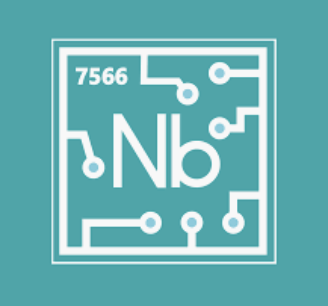
Rookie FRC team 7566 reached out to Valor this year seeking advice on what it takes to be a Rookie All-Star team and about other awards. They asked us what parts of their team they should highlight and how to format a good business plan. We answered all their questions and sent them our Rookie All-Star criteria notes, Rookie All-Star packet, Business Plan, and Technical Packet. We also gave them advice on what should be their focus this year as a rookie team and tips for their first season.
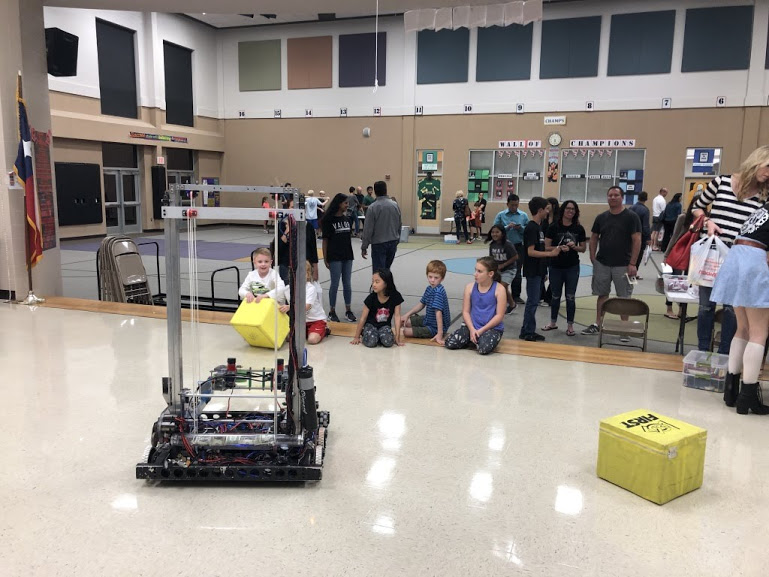
Valor went to River Ridge Elementary school, a local school in our area, to demo our robot to young kids and their parents. We explained FIRST and what it can offer to elementary students, introducing a want to create FLL teams at the school. We received a very postive interest from parents and are currently talking to the school's PTA to create new FLL teams at River Ridge.

Valor got in contact with LEEF (Leander Education Excellence Foundation) and were given the opportunity to create a foam machine and host a showcase booth for the event. For the past 2 years Valor has sponsored and attended the LEEF Mudstacle. This event was a dual fundraiser and fun-run event for people of all ages. Members of Valor were asked to create a foam machine for the beginning and end of the fun run course in order to add more character and amusement to the event. With LEEF, we were able to reach over 3,500 students and parents from all across LISD to talk about and spread the message of FIRST while also getting parents and student interested and involved in STEM. From the Mudstacle event alone, LEEF and its event volunteers were able to raise $68,000 to support LISD programs for the economically disadvantaged.
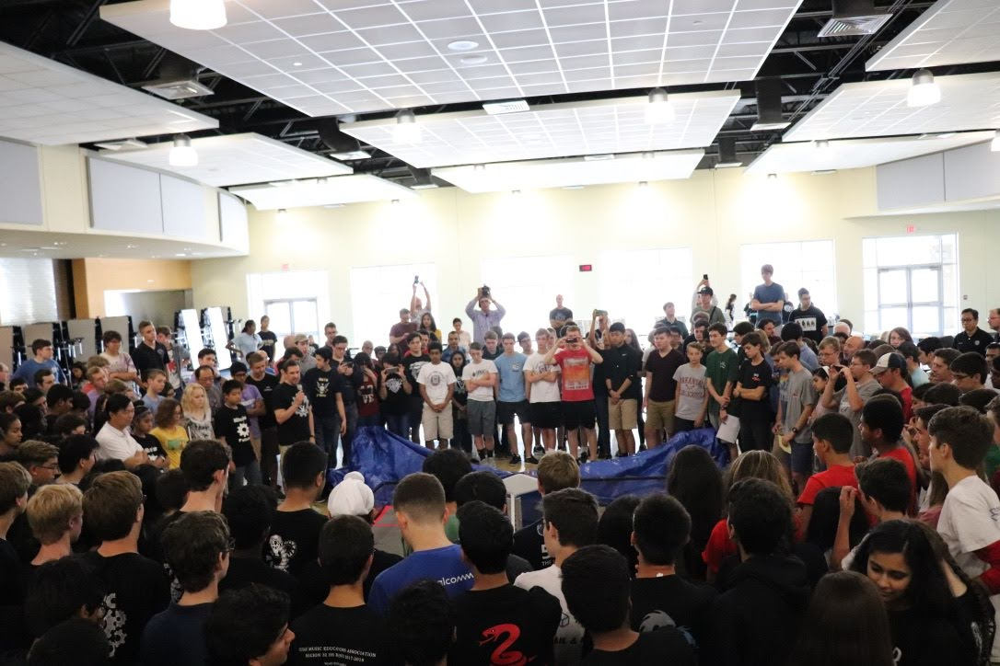
In 2017 and 2018, Valor organized the FTC Central Texas Kickoff for 36 teams to enjoy before the 2017-2018 Relic Recovery and for 40 teams for the 2018-2019 Rover Ruckus game. In the morning we ran our selected 10 team bonding games to serve as ice breakers and give all teams opportunity to meet others. Following suit, we ran 8 workshops for all teams and students so they could start their season off with a good foundation of knowledge for the FTC process and all it involves. These workshops included: Marketing Strategies/Business, Engineering Notebook, Intro to Hardware, Advanced Hardware, Intro to Programming, Advanced Programming, Intro to CAD, Advanced CAD, and Game Strategy.

Valor hosted a FTC rookie camp at Vandegrift High School for the Viperbots teams. It is a week long camp held during the summer. We had multiple workshops for the different sub teams to show them the fundamentals of their role. We had mock judging sessions, hardware presentations, introduction to marketing presentations, and introduction to software presentations. At the end of the week, we had a mock competition where the rookies would compete with the robots that they had built during the week. It gave the rookies a basic idea of what a real competition would be like later in the season.

The purpose of this event is to show friends, family, and sponsors of Valor the robot at the end of the build season. This way parents can see the what their students have been working on the past six weeks. This also lets sponsors see what their hard earned dollars go to. Each sub-team in Valor gives a presentation on their specific part of the robot or team. Valor hosted its very first open house this year. We had 70 guests that were a mix of parents, sponsors, and even prospective students that were interested in joining Valor.
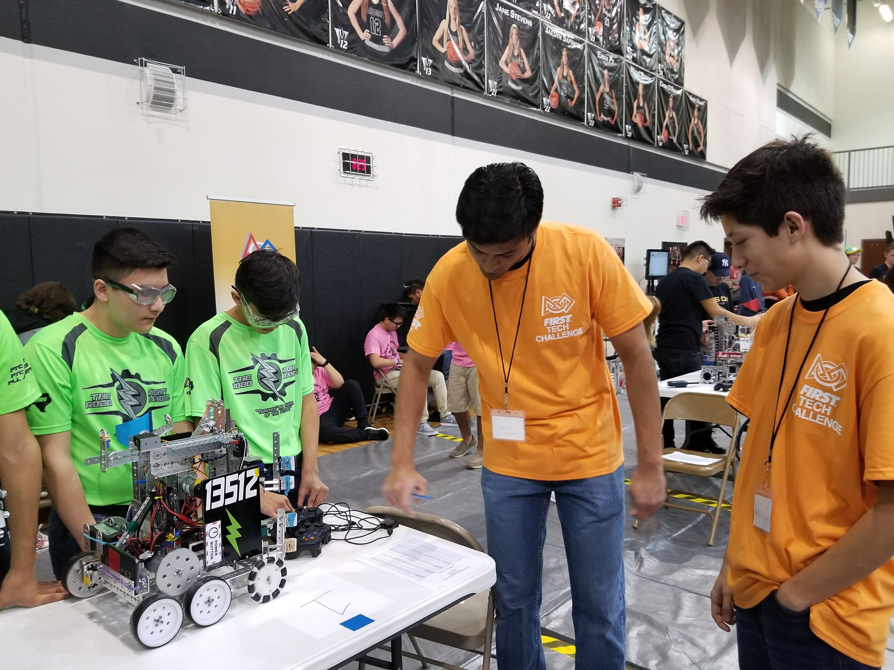
For the FTC Texas Alamo Regional, we set up arenas and judging rooms while also running the volunteer registration table the night before competition to ensure a steady event the following day. Additionally, we had several members volunteering until 9 p.m. that Friday night as Pit Admin and guides to get teams through our building. The day of competition, our team volunteered as pit queuers. This meant that we had people in all areas of the competition; some ran back and forth while others made sure that team were early for matches. By having members of Valor volunteer in addition to the loyal volunteers of FIRST events, the FTC Alamo Regional was able to run smoothly and according to schedule.

At FRC kickoff, Valor’s coach taught a workshop on reliable and robust autonomous. This workshop was based on the autonomous we tested during our off-season build session. We were able to help teams by explaining the mistakes we made during our testing and share how we were able to create a successful autonomous in a short amount of time. This workshop was focused on our use of sensors, state machines, and CSV files- all core parts of our software platform. Even though we were a rookie team, we quickly found that our autonomous programming scheme was effective and easy to implement for almost any team with limited experience. Our kickoff workshop was built off of this realization had helped some teams, ssuch as 2881 Lady Cans, better implement sensors into their autonomous programs.
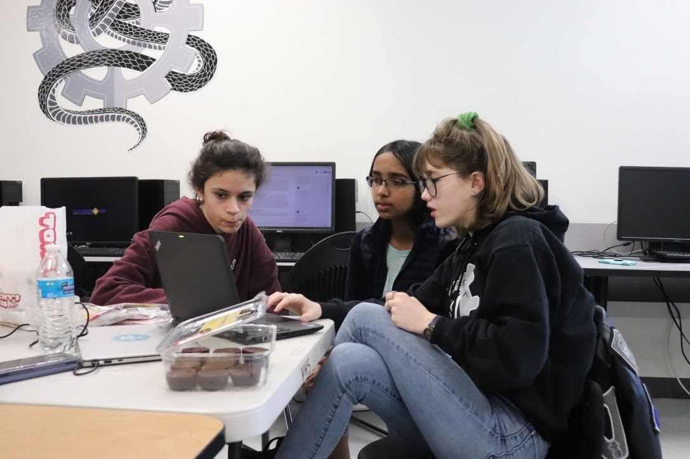
Valor spends the 6 months before their build season helping 8 different FTC teams from the ViperBots program, as well as 2 other FTC teams from local middle schools and 3 FTC from Cedar Park High School. Each of the 13 FTC teams are assigned 1-5 FRC mentors to work with them for the majority of their design and build season. These 13 teams all compete in the FTC Alamo region and 10 are able to feed directly into our FRC program. The students on Valor focus on teaching skills that will stay with the FTC students for the rest of their engineering and business careers. This mentor time is a great opportunity for the FTC students to learn from the years of experience that the members of Valor have to offer. Not only do the members of Valor help with the technical parts of the FTC teams, but also help plan and attend outreach events.
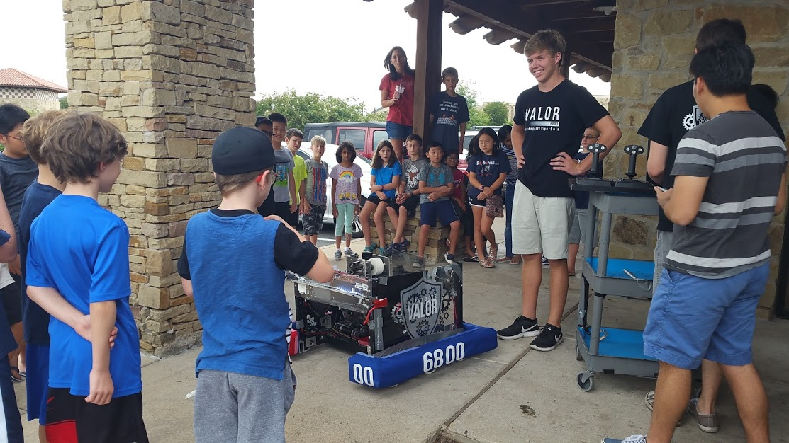
After the FLL challenge Hydro Dynamics had been released, Valor continued to meet with the 30 kids who had previously attended the summer camps, and joined a team at their elementary school. Every Tuesday and Thursday , Valor would act as mentors and help these FLL teams with any issues they had during their design process/ build time. We also invited these kids to attend the Texas Robot Round-Up so they could experience a full FRC tournament. After these events, we would demonstrate the various functions of our robot and give the FLL students a tour of our machine in hopes of inspiring the kids to continue with FIRST robotics.
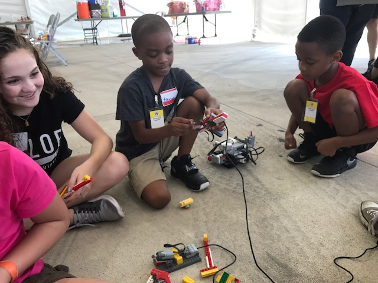
With the tragedy of Hurricane Harvey in the greater Houston area, many families from the coast were displaced to shelters in Austin. The damage in Houston was so extensive that many of the children and their families were in shelters well into the beginning of the 2017 school year. These families lacked many of the comforts of home and many of the children were missing school due to school closures all over the affected area. We brought NXT kits and helped the kids put together simple Lego robots, which was a familiar area for the members of Valor as we have worked closely with 3 FLL teams. This Hurricane Harvey Relief event was a way for the children and adults alike to temporarily forget about the devastating storm and instead have a great time learning how to build and program robots.
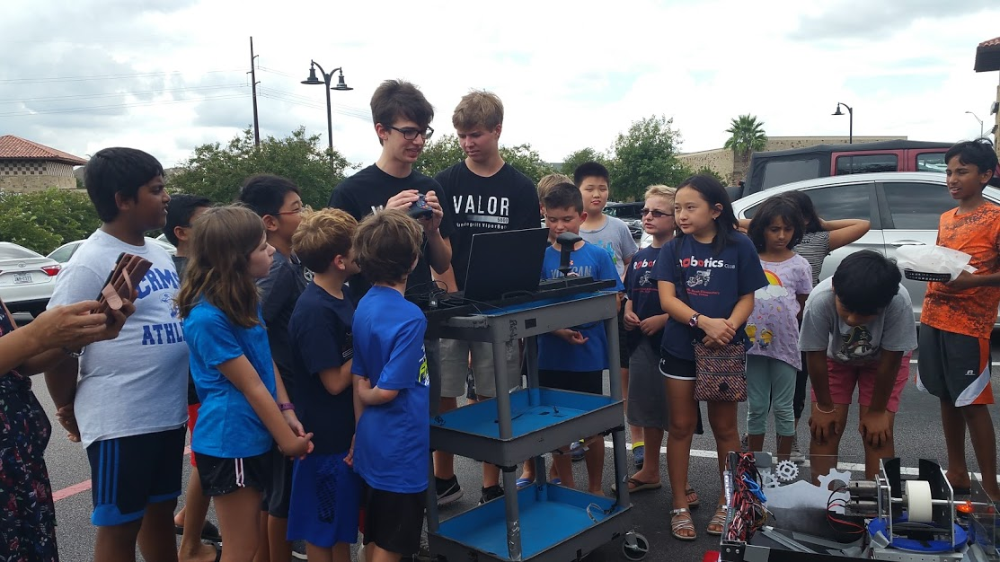
After the FLL challenge Hydro Dynamics had been released, Valor continued to meet with the 30 kids who had previously attended the summer camps, and joined a team at their elementary school. Every Tuesday and Thursday, Valor would act as mentors and help these FLL teams with any issues they had during their design process/ build time. We also invited these kids to attend the Texas Robot Round-Up so they could experience a full FRC tournament. After these events, we would demonstrate the various functions of our robot and give the FLL students a tour of our machine in hopes of inspiring the kids to continue with FIRST robotics.

LISD Convocation is an event held in early August to kick-start the Leander Independent School District's school year. It’s an event that hosts over 6,000 LISD employees from all over the entire district. By attending and showcasing our brand new FRC Steamworks Off-Season robot, we were able to expose teachers, custodians, food service workers, bus drivers, and many more to the extended programs within FIRST. We were honored when we were asked to demo our robot and this was an incredible opportunity to show Leander ISD what we had been working so diligently on during the summer.
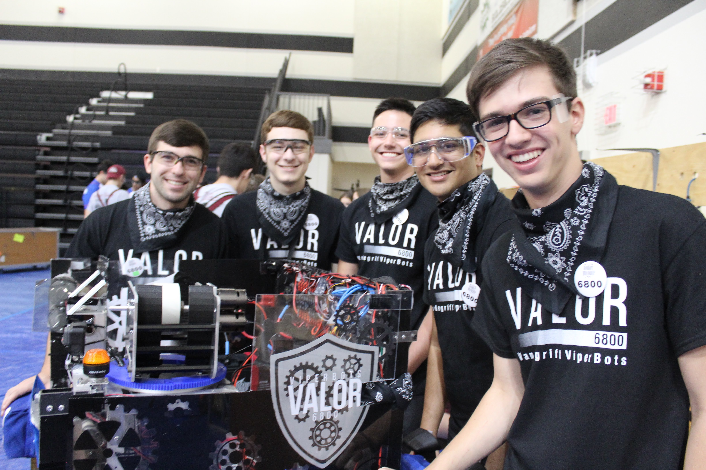
The Texas Robot Round Up (TRR) is an off-season competition that was started by 2158 ausTIN CANs in 2011. At first, the event was held at Anderson high school. Then as more and more teams wanted to compete, the event eventually moved to the Austin Convention Center during (University Interscholastic League) Week. Last year, UIL decided to become more involved in robotics and decided to create the UIL State Championships during UIL week. Problematically, TRR was without a venue and Anderson high school was unable to host the event at their school. Hearing about this, Valor knew that there was only one course of action. Valor extended a helping hand and offered their high school facilities to the ausTIN CANs in order to keep the fun annual off-season event going.
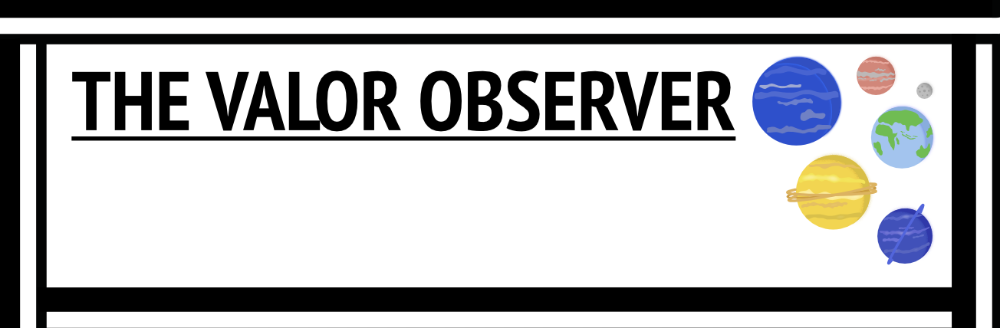
Valor sends weekly newsletters to our sponsors to keep them updated on the team'ss progress and success. In these newsletters, we include a summary of what happened during that week, two student spotlights, a meet the mentor section, in depth updates for each sub-team, photos, and a page dedicated to our sponsors logos with a short sentence stating our thanks for their support.
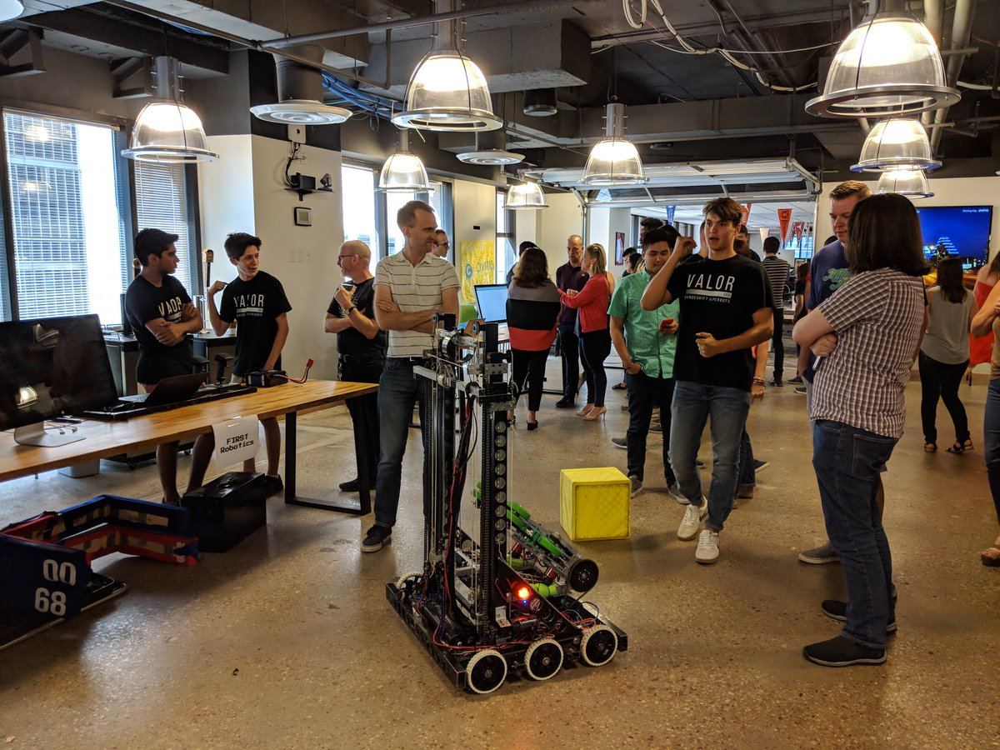
Valor has demoed our robot twice at Hanger and Civitas Learning over our past 2 seasons of FRC. At Haner, each demo had an audience of around 30 engineers who would give honest feedback regarding the mechanics and performing power of our robot. Engineers where curious on how we designed our robot as well as why we chose certain mechanisms instead of others. At Civitas Learning, we demoed our robot at their weekly Friday demos. There were about 25 engineers there who attended gave interest in the program and how to get their kids involved. Recently, we also demoed our robot at Dell, talking about our new robot design and plans for the current game.
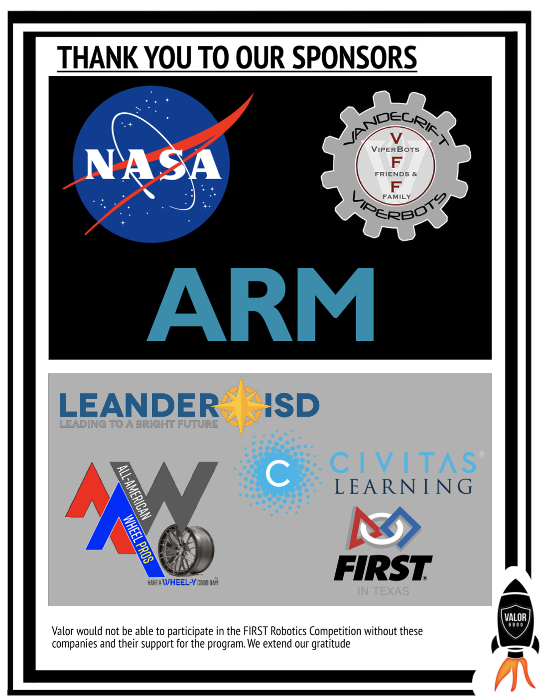
Valor works to recruit sponsors through engaging them with our weekly newsletters and robot demos. We gain our sponsors by reaching out to them seeking advice and feedback for our robot and or season. We also have put together a sponsor packet, which is a reward system for our sponsors offering certain benefits for a certain amount of money. These benefits include displaying a sponsor’s logo on our website, newsletter, and robot.